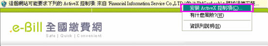

全國繳費網目前已上線提供服務包括了學費、電費、信用卡費、貸款、國有土地租金(補償金)、中華電信費、報名費、補習費以及捐款等費用之繳納。
目前全國繳費網提供以晶片金融卡或活期性存款帳戶兩種繳款方式。使用晶片金融卡繳款需具備讀卡機，且可繳他人帳單；使用活期性存款帳戶繳款不需讀卡機，但只能繳本人帳單。
本網站所提供各類繳費交易服務之手續費率，請參閱各類帳單繳款方式或說明事項，或逕洽各帳單業者或代收銀行。
請繳費者參閱各家信用卡銀行之帳單繳款方式或說明事項，或逕洽該信用卡發行銀行。
目前加入全國繳費網學費代收的銀行包括台灣銀行、土地銀行、華南銀行，以及臺灣企銀，陸續將有其它代收銀行加入，以擴大服務範圍。
第一次使用全國繳費網，請點此依「首次繳費電腦環境檢測」步驟完成相關設定， 設定完成後，交易服務將出現如下安裝安全性元件提示的畫面，請選擇「是」即可。
若您看到的不是上列的畫面，請往下看，並請耐心依下面步驟安裝ActiveX控制項安全性元件訊息。
Step1: 請將滑鼠移到ActiveX訊息列，按下滑鼠右鍵，即出現安裝ActiveX控制項視窗，請按下「安裝ActiveX控制項」。
Step2: 請按下安裝即可。
Step1: 輸入電信(話)號碼查詢待繳費用後，決定是否繳費。

Step2: 待繳費用查詢結果，若確定繳費，請選擇「使用晶片金融卡」繳款方式。
Step3: 確認繳費相關資料無誤後，即可插入晶片金融卡進行繳費。
Step4: 輸入「動態圖像驗證碼」後，按下「確認付款」。
Step5: 輸入晶片金融卡密碼後，確認轉出帳號等資料後，再次輸入晶片金融卡密碼。
Step6: 完成交易，取出晶片金融卡，並列印交易明細表供日後查詢使用。
Step1:選擇信用卡銀行，輸入銷帳編號、繳款金額後，選擇「使用活期性存款帳戶」繳款方式。
可能您在IE有設定或安裝了Google、MSN或YAHOO!提供的「攔截彈跳式視窗」或「快顯封鎖」程式，可於「檢視」/「工具列」項下如有「V」，請在項目上再點一次，確認無「V」狀態，若不改無「V」狀態，網頁的網址列下可能出現「快顯已封鎖」畫面，請選擇「暫時允許快顯」
身分証字號英文字母第一碼：A為01，B為02，C為03，D為04，E為05，F為06，G為07，H為08，I為09，J為10，K為11，L為12，M為13，N為14，O為15，P為16，Q為17，R為18，S為19，T為20，U為21，V為22，W為23，X為24，Y為25，Z為26。